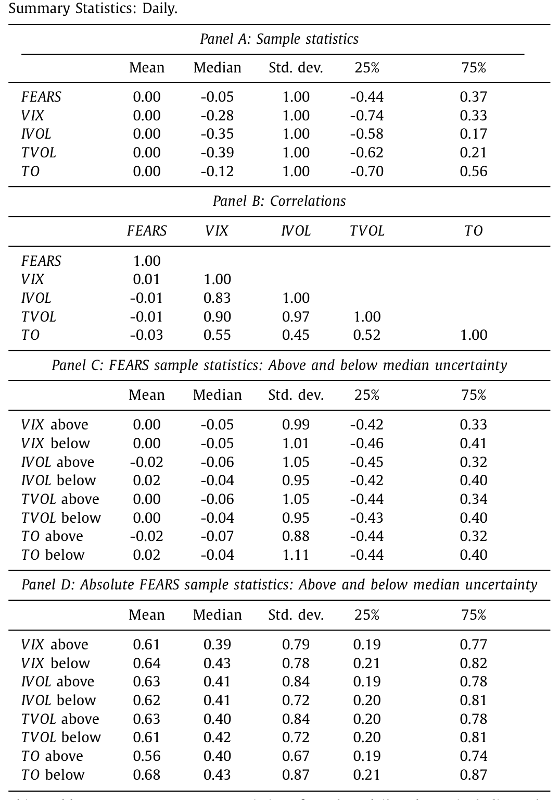
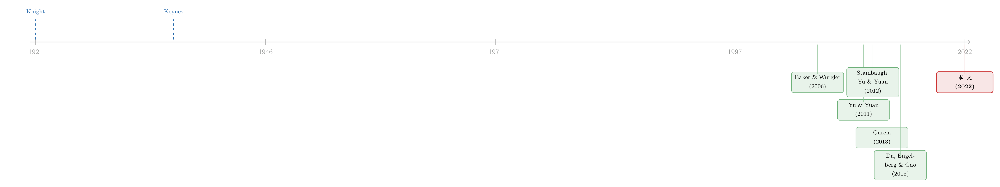

估值越「说不清」，情绪越「说了算」
本文读的是 Birru & Young (2022, Journal of Financial Economics)：投资者情绪 (sentiment) 并不是一股恒定的力量——它只在「不确定性」高的时候才真正抓住市场。当总体不确定性高出均值一个标准差时，情绪对市场收益的预测能力会被放大到 两到四倍；横截面上，那些最「投机」的股票、最经典的异象组合，也都在高不确定性时段才显出对情绪的强敏感。
1 一个被忽略的「前提」
行为金融讲了二十年的故事，主角一直是「情绪」。Baker 和 Wurgler (2006) 告诉我们，情绪高涨时，那些难以定价的小盘股、年轻股、高波动股会被推得过高，随后回落；Da、Engelberg 和 Gao (2015) 用搜索量做出的 FEARS 指数，把这件事推到了日度频率。情绪几乎成了解释「异象」的万能钥匙。
但有一个前提，我们其实一直默认、却很少去正面检验：情绪要起作用，得先有一片「说不清」的水域。
凯恩斯 (Keynes, 1936) 早就把这层意思讲得很直白：「在非正常时期，当『现状会无限延续』的假设变得不那么可信、却又没有明确理由预期会发生确定的变化时，市场就会被一波又一波乐观与悲观的情绪所左右——这些情绪不讲道理，却在没有可靠依据来做合理计算的地方，有某种正当性。」
换句话说：如果基本面清清楚楚、价值一眼可算，情绪再汹涌也无处落脚——理性套利者会立刻把价格拉回来。情绪真正能「说了算」的地方，恰恰是那些连基本面都「说不清」的时刻。
这里的「说不清」，作者用的是奈特 (Knight, 1921) 意义上的不确定性 (uncertainty)——不是「已知概率分布的风险」，而是「连概率分布都给不出来」的那种无知。当你连各种状态的概率都赋不上时，理性计算就失去了立足点，情绪自然趁虚而入。
这就是 Birru 和 Young 这篇论文的全部张力所在：情绪不是一个常数项，它的定价能力是「时变」的，而调节这个力度的旋钮，就是总体不确定性。
2 把「前提」翻译成一个可检验的预测
从上面的直觉出发，一个很自然的、却出奇干净的实证预测就浮出来了：
情绪在估值更「主观」的时候，应当表现出更强的资产定价效应，从而导致情绪诱发的错误定价 (sentiment-induced mispricing) 在随后被更大幅度地修正。
于是问题被转化成一道条件预测的题目：把情绪对未来收益的预测能力，条件在不确定性的高低上去看。如果上面的故事成立，那么情绪的预测系数就不该是一个固定的数，而应该随不确定性的升高而变大。
这就引出了全文的核心方程——一个再朴素不过的带交互项的预测回归 (predictive regression with an interaction term)：
整篇文章，说到底就是在反复地、在不同频率、不同资产、不同情绪与不确定性代理上，去看这一个系数 \(\delta\)。它若显著、且符号方向对，凯恩斯的那句话就有了现代数据的注脚。
注意 \(\delta\) 显著并不要求 \(\beta\) 显著。事实上在月度上 \(\beta\) 几乎为零（与 Baker & Wurgler, 2007 一致：低频情绪指数无条件下预测不动大盘），但一旦乘上不确定性，情绪就「活」了过来。这正是本文最漂亮的地方——它把一个被认为「没用」的预测变量，复活成了一个条件上强有力的预测变量。
3 识别策略：两个频率、两类「说不清」
接着，一个绕不开的问题是：情绪怎么量？不确定性又怎么量？而且——会不会这两者其实是同一回事（高不确定性时段恰好就是情绪极端的时段），那样交互项就成了情绪自己和自己打架，毫无意义。
作者在度量上做了刻意的「错频」与「分离」安排：
- 情绪。日度用
FEARS（Da et al., 2015）——它从互联网搜索量里抽取悲观情绪的日度变化，数值越高代表情绪越悲观；月度用经典的SENT（Baker & Wurgler, 2006）——封闭式基金折价、IPO 数量与首日回报、增发占比、股利溢价五项的第一主成分，数值越高代表情绪越乐观。一个抓「变化」，一个抓「水平」。 - 不确定性。主用两个股市不确定性代理：一是
VIX（CBOE 对未来 30 天 S&P 500 的风险中性预期波动率），二是横截面平均的个股特质波动率IVOL（相对 Fama & French, 1993 三因子的日度残差波动）。由于VIX只从 1990 年才有、而月度情绪从 1965 年起，月度分析改用 Manela & Moreira (2017) 的新闻隐含波动率NVIX。稳健性里还用了横截面总波动TVOL与换手率TO（Connolly et al., 2005）。
然后是真正关键的一步——证明情绪和不确定性是两股不同的力。如表 1 所示，FEARS 与各不确定性代理之间的相关系数全都落在 −0.03 到 0.01 之间（VIX 与 FEARS 仅 0.01）；而几个不确定性代理彼此之间却高度相关（VIX 与其它代理在 0.55–0.90，其中 VIX 与 IVOL 高达 0.83，最小的两两相关也有 0.45）。Panel C 进一步显示，在不确定性高于或低于中位数的两组里，FEARS 取值几乎一样。

Table 1
这组相关系数是全文论证的「地基」：情绪没有偷偷把不确定性背在身上。所以交互项捕捉的，确实是「同样一份情绪，在不同不确定性环境下定价力度的差异」，而不是两个高度共线变量的人为产物。
数据上，股票数据来自 CRSP，无风险利率取自 Ken French 数据库，总量分析用 S&P 500 超额收益；横截面用 CRSP 按 Scholes-Williams (1977) beta 与总波动排序的十分位组合的价值加权多空价差；月度还用了 Stambaugh、Yu 和 Yuan (2012) 那套由 11 个知名异象（O-score、违约概率、净增发、综合增发、应计、净经营资产、动量、毛利率、资产增长、ROA、投资资产比）构成的综合异象组合。所有情绪与不确定性变量都被标准化为零均值、单位标准差，因此系数可以直接读成「一个标准差」的效应。
4 五个结果，一根主线
作者给出五个主结果，但它们其实是同一根主线在五处的回响。
其一，大盘层面。 日度上，FEARS 对随后 1–3 天的收益反转 (return reversal) 有预测力，而不确定性升高一个标准差，这种预测力会变成约 2 到 3 倍。月度上更戏剧：情绪对未来大盘无条件下毫无预测力（再次印证 Baker & Wurgler, 2007）；可一旦条件在不确定性上，情绪在 6、9、12 个月的反转预测就显著了，且不确定性高一个标准差时，效应是均值处那个（不显著的）效应的 2 到 4 倍。用 Huang 等 (2015) 专为预测短期大盘而构造的对齐情绪指数，1 个月、3 个月的短期限上也成立。
其二，横截面里的「投机股」。 情绪最该影响的，是那些估值最主观的股票。Baker & Wurgler (2006) 与 Da et al. (2015) 都发现高 beta、高波动股对情绪格外敏感。本文则显示：这种敏感主要发生在高不确定性时段——当不确定性高出均值一个标准差时，情绪对 beta、波动排序组合的预测力在日度上最高放大到约 3 倍，月度上约 2 倍。
其三，异象。 沿着 Stambaugh et al. (2012)「高情绪预示异象高盈利、低情绪预示低盈利」的发现，本文把那套综合异象组合拿来，发现它对滞后情绪的敏感度在高不确定性时显著更高——一个标准差的不确定性上升，对应异象可预测性最高变成约 2 倍。
其四，风险-收益关系。 Yu & Yuan (2011)、Shen et al. (2017) 指出情绪会扰乱传统的风险-收益权衡（高情绪后高风险组合反而收益更低）。本文发现，这种「扰乱」也主要在高不确定性时发生，一个标准差的不确定性上升让该效应强约 2 倍。
其五，衰退之谜。 Garcia (2013) 发现新闻情绪在衰退期对收益的预测力格外强，并坦言自己「没有讲清驱动这种可预测性的机制」。本文给了一个候选机制：把不确定性及其与情绪的交互一起放进回归后，「衰退×情绪」的交互项变得不显著，而「不确定性×情绪」的交互项仍保持统计与经济上的显著。也就是说，衰退之所以放大情绪，很可能正是因为衰退期不确定性是逆周期升高的——不确定性才是那台更底层的发动机。
还有一个更狠的非线性检验：把「高不确定性」定义为不确定性处于历史分布最高五分位的时段。结果是，日度上 FEARS 对大盘的预测力几乎完全局限在最高五分位的那些天；五分位之外，情绪对大盘、乃至对横截面的预测力都既小又不显著。情绪不是「时强时弱」，而更像「平时沉睡、高不确定性时才醒来」。
5 那会不会只是「套利更难」？
读到这里，一个挑剔的读者会追问：高不确定性时段，会不会只是套利限制 (limits to arbitrage) 恰好更紧的时段？比如做市商资金紧张、中介约束 (intermediary constraints) 收紧，导致错误定价更难被纠正——那样的话，主角就不是「不确定性」，而是「中介的钱包」。
作者用中介融资的若干代理去检验这条替代解释，没有找到证据表明中介约束能解释不确定性的调节作用。换句话说，他们记录的效应，并非「高不确定性时段恰好情绪也异常极端」或「恰好中介约束异常紧」所致——把这两条旁路堵上之后，「不确定性放大情绪」这条主干仍然挺立。
这一点很重要，因为它把本文和「纯套利限制」的叙事区分了开来：不确定性不只是让套利变难（供给侧），它同时让噪声交易者更敢于「乱出价」（需求侧）。两股力同向叠加，才有了我们看到的放大。
6 文献脉络
把这条线索拉直来看，会更清楚本文站在哪里。
最上游是两位经济学家的概念奠基：奈特 (Knight, 1921) 把「风险」与「不确定性」分了家，凯恩斯 (Keynes, 1936) 则点出不确定性正是情绪滋生的土壤。半个多世纪后，行为金融把这套直觉做成了实证：Baker 和 Wurgler (2006) 证明情绪最影响那些「估值主观」的股票，Da、Engelberg 和 Gao (2015) 用 FEARS 把它推到日度。与此同时，几条平行的支线各自展开——Stambaugh、Yu 和 Yuan (2012) 把情绪和异象收益绑在一起；Yu 和 Yuan (2011) 发现情绪会破坏风险-收益关系；Garcia (2013) 发现情绪在衰退期格外灵验。横截面上，Kumar (2009)、Zhang (2006) 则反复印证「难以定价的股票，行为偏误更大」。

这些支线看似各说各话，但 Birru 和 Young 做的事，是给它们找了一个共同的调节变量：总体不确定性。市场层面的可预测性、投机股的敏感、异象的强弱、风险-收益的扭曲、衰退之谜——五件看似分散的现象，被「不确定性放大情绪」这一条主线串了起来。本文因此既是对 Garcia (2013) 留下的机制问题的一个回答，也是对整条「情绪定价」文献的一次「条件化」重写。
（关于情绪本身如何随行情动态变化、理性投资者如何「换尺子」，可参见《悲观与乐观的浪潮：当「稳健」的投资者学会了随行情换尺子》；关于异象收益究竟由谁、出于何种动机推动，可参见《异象收益究竟是谁推动的？》。）
7 评论与延伸（Q&A + 研究方向）
(a) 几个可能的疑问
Q：「不确定性」和「波动率」到底是不是一回事？这里用 VIX 当不确定性，会不会名不副实？
严格说不是一回事。作者引的是奈特意义上的不确定性——「连概率分布都给不出来」。但实证上不可直接观测，只能用代理。
VIX、IVOL这些波动率代理捕捉的是「市场更难预测」的状态，作者把它当作不确定性的可观测影子，并用多个代理（VIX、IVOL、NVIX、TVOL、TO）交叉验证以缓解「名不副实」的担忧。它确实是一个近似，而非概念本身。
Q：月度情绪本来就预测不动大盘（Baker & Wurgler, 2007），那条件上的显著会不会只是数据挖掘？
这是最该警惕的点。作者的防线有三：一是同一套交互在日度、月度、多个不确定性代理上都成立，方向一致；二是换用 Huang et al. (2015) 专为短期预测设计的对齐情绪指数仍成立；三是「最高五分位」这种非线性切分给出了同向且往往更强的结果。多个独立切口指向同一结论，比单一回归的 t 值更让人信服。
Q：情绪和不确定性会不会其实高度相关，交互项只是共线性的假象？
这恰恰是作者花最大力气排除的。表 1 显示
FEARS与各不确定性代理相关系数仅在−0.03到0.01，且在高/低不确定性两组里情绪取值几乎相同。两者是分离的力，交互项才有干净的解释。
Q：为什么强调「反转」而不是「同向预测」？
因为故事是「情绪诱发错误定价，随后被修正」。高不确定性时，情绪带来的当期错误定价更大，所以随后被纠正（反转）的幅度也更大。日度上是「快速反转」，月度上则是「随后数月缓慢修正」——频率不同，但都是错误定价被纠偏的影子。
Q：和 Yu & Yuan (2011) 不是讲了类似的事吗，本文新在哪？
Yu & Yuan 关注情绪如何扰乱市场层面的风险-收益关系，机制是卖空约束。本文与它在低频大盘预测上有相似的暗示，但把战线推到了异象横截面、风险-收益权衡的横截面、乃至衰退之谜，并且把统一的调节变量明确为不确定性——这是 Yu & Yuan 没有给出的预测。
Q：能否反过来说，是「高不确定性本身」在预测收益，而非情绪？
作者把不确定性 \(U_t\) 作为独立控制项 \(\gamma U_t\) 放进了回归。主角始终是交互项 \(\delta\)，它度量的是「在控制了情绪和不确定性各自的主效应之后，两者一起带来的额外预测力」。所以结论不会被「不确定性单独预测收益」这条已有文献（如 Manela & Moreira, 2017）所吸收。
(b) 几个可能的研究问题与提案
1. 把这套逻辑搬到公司债 / 信用市场。
【经济故事】信用利差本身就含有大量「说不清」的成分——违约概率、回收率都是难以精确估计的。如果「不确定性放大情绪」成立，那么在宏观不确定性高的时段，信用市场的情绪（如一级发行情绪、ETF 资金流）对随后利差反转的预测力应当更强，尤其在高收益、难定价的债券里。
【可行性】中。情绪代理在债市不如股市成熟，可借用发行量、基金流、TRACE 成交结构构造；不确定性沿用 VIX/NVIX。识别上仍是交互回归，难点在债市情绪指标的构造与内生性。
2. 外资持有人是「噪声」还是「定盘星」？ 【经济故事】外资在本地市场往往面临更高的信息不确定性（信息劣势、距离）。若不确定性放大情绪效应，那么由外资主导的市场或个券，在高不确定性时段是否表现出更强的情绪驱动错误定价与随后反转？还是说外资反而更冷静、起到稳定作用？ 【可行性】中。需国别或个券层面的外资持股数据（如 EPFR、各国托管数据）与情绪/不确定性代理。识别可用持股比例做横截面交互，但要小心外资持股的内生选择。
3. 不确定性的「好坏之分」是否带来不对称放大。 【经济故事】Segal、Shaliastovich 和 Yaron (2015) 把不确定性拆成「好」与「坏」两类。一个自然的问题是：放大情绪定价的，是哪一种不确定性？坏的不确定性（下行）也许同时收紧套利、放大悲观情绪，效应更强。 【可行性】高。两类不确定性的构造方法已有现成做法，直接替换本文的 \(U_t\) 重做交互回归即可，数据均为公开股市数据。
4. 高频结构：当期错误定价 vs. 随后反转的速度。
【经济故事】本文已暗示日度是「快反转」、月度是「慢修正」。一个更细的问题是：不确定性是否同时影响错误定价的形成速度与修正速度？高不确定性是不是既让错误定价更快堆积、又让它修正得更慢（因为套利更难）？
【可行性】高。用日内或日度数据，配合事件窗口与脉冲响应即可刻画动态，数据为标准的 CRSP/TAQ。
8 我的判断
这篇文章的贡献不在于发明了新变量，而在于用一个变量（不确定性）把一片散落的实证现象重新组织成了一条主线。它最聪明的地方，是把一个「无条件下没用」的预测变量（月度 SENT），通过条件化复活成「条件上强有力」的预测变量——这本身就是对「情绪究竟有没有用」这场长期争论的一种调和：有用，但有前提。对 Garcia (2013) 衰退之谜的「机制替换」尤其漂亮，交互项显著性的此消彼长是全文最有说服力的一笔。
对识别我有两点保留。其一，不确定性的度量始终是波动率的影子。VIX、IVOL 是否真捕捉了奈特意义上的「无概率可言」，还是只是捕捉了「高波动 = 高风险溢价」的状态？作者用多代理交叉验证缓解了这点，但概念与度量之间的缝隙仍在。其二，交互项的方向虽与故事一致，却不足以确立因果。高不确定性时段是宏观状态的内生产物，伴随它的不止情绪与套利限制，还有流动性、风险厌恶、机构行为的同步变化；作者排除了中介约束这一条，但替代机制的清单恐怕还没穷尽。
后续我最想看到的，是把这套「条件化」逻辑搬到信用市场和有外资参与的市场去检验——那里的「估值主观性」天然更高，若情绪-不确定性的交互在债市同样成立，凯恩斯那句关于「没有可靠依据来做合理计算」的话，就会从股市的隐喻，变成跨资产的一条定律。
参考文献
- Baker, M., Wurgler, J. (2006). Investor sentiment and the cross-section of stock returns. Journal of Finance 61(4), 1645–1680.
- Baker, M., Wurgler, J. (2007). Investor sentiment in the stock market. Journal of Economic Perspectives 21(2), 129–151.
- Birru, J., Young, T. (2022). Sentiment and uncertainty. Journal of Financial Economics 146(3), 1148–1169.
- Connolly, R., Stivers, C., Sun, L. (2005). Stock market uncertainty and the stock-bond return relation. Journal of Financial and Quantitative Analysis 40(1), 161–194.
- Da, Z., Engelberg, J., Gao, P. (2015). The sum of all FEARS investor sentiment and asset prices. Review of Financial Studies 28(1), 1–32.
- Garcia, D. (2013). Sentiment during recessions. Journal of Finance 68(3), 1267–1300.
- Huang, D., Jiang, F., Tu, J., Zhou, G. (2015). Investor sentiment aligned: a powerful predictor of stock returns. Review of Financial Studies 28(3), 791–837.
- Keynes, J.M. (1936). The General Theory of Employment, Interest and Money. London, Macmillan.
- Knight, F.H. (1921). Risk, Uncertainty and Profit. Houghton Mifflin Company, Boston, MA.
- Kumar, A. (2009). Hard-to-value stocks, behavioral biases, and informed trading. Journal of Financial and Quantitative Analysis 44(6), 1375–1401.
- Manela, A., Moreira, A. (2017). News implied volatility and disaster concerns. Journal of Financial Economics 123(1), 137–162.
- Shen, J., Yu, J., Zhao, S. (2017). Investor sentiment and economic forces. Journal of Monetary Economics 86, 1–21.
- Stambaugh, R.F., Yu, J., Yuan, Y. (2012). The short of it: investor sentiment and anomalies. Journal of Financial Economics 104(2), 288–302.
- Yu, J., Yuan, Y. (2011). Investor sentiment and the mean–variance relation. Journal of Financial Economics 100(2), 367–381.
- Zhang, X.F. (2006). Information uncertainty and stock returns. Journal of Finance 61(1), 105–137.